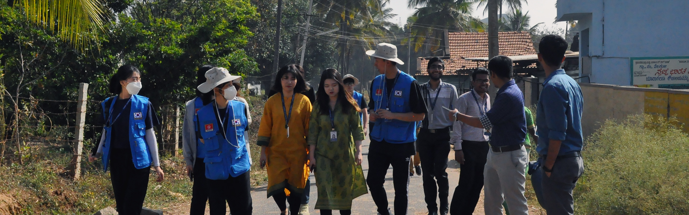

The team is working on the application of technology for the benefit of agricultural farmers. Agriculture has sustained human life till now by providing a constant supply of food and occupation. Detection of newer pests and other crop-damaging insects has been one of the unresolved challenges for the farmers. Today’s technology can come in handy for this issue. Machine vision and image processing together can provide a solution to detect insects at a stage of crop growth where the damage could be prevented or reduced. The major problem with the farmers is the identification of the unhealthiness in the crops, especially when the field becomes dense. The dense field makes it difficult for the farmer to manually get inside the fields and check the healthiness. This problem provides an avenue for Drone utilization. Hence it is identified that the drones fitted with an infrared camera can be used to obtain images of the crop leaves as per the farmer requirements. These images are then processed with MATLAB/Open CV. Tools for processing, image enhancement, and segmentation to identify the diseases in plants. This is proposed to be done by comparing the obtained images with the database images of healthy leaves. This diagnosis will help the farmers to identify the disease and use appropriate disinfectants/fertilizers to solve the insect-related problems.